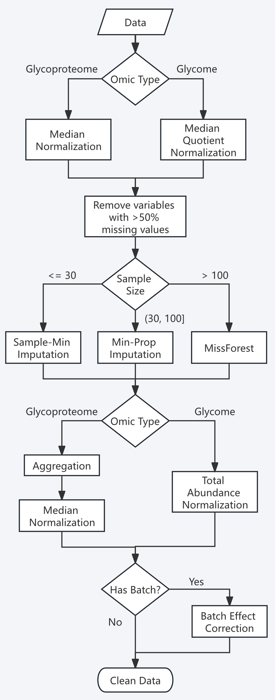

Get Started with glyclean
glyclean.RmdWelcome to the Wild World of Data Preprocessing! 🧬
Every omics data analysis journey begins with the same challenge: taming your raw data. Think of it like preparing ingredients before cooking a gourmet meal – you need to wash, chop, and season everything just right. In the glycomics and glycoproteomics world, this means normalization, missing value handling, and batch effect correction.
Meet glyclean – your Swiss Army knife for
glycoproteomics and glycomics data preprocessing! This package provides
a comprehensive toolkit that takes the guesswork out of data cleaning,
with specialized methods designed specifically for the unique challenges
of glycan analysis.
Important Note: This package works with
glyexp::experiment() objects. If you’re new to this data
structure, we highly recommend checking out its
introduction first. We’ll also be using the glyread package to load
our data – it’s the go-to tool in the glycoverse
ecosystem.
Meet Our Star Player: Real Glycoproteomics Data 🌟
Let’s dive in with a real-world dataset that will showcase what
glyclean can do. We’ll use
glyread::read_pglyco3_pglycoquant() to load our data into a
proper glyexp::experiment() object.
exp <- read_pglyco3_pglycoquant(
"glycopeptides.list",
sample_info = "sample_info.csv",
glycan_type = "N"
)
#> ℹ Reading data
#> ✔ Reading data [340ms]
#>
#> ℹ Parsing glycan compositions
#> ✔ Parsing glycan compositions [213ms]
#>
#> ℹ Parsing glycan structures
#> ✔ Parsing glycan structures [2.9s]
#>
#> ℹ Packing experiment
#> ✔ Packing experiment [23ms]
#>
exp
#>
#> ── Experiment ──────────────────────────────────────────────────────────────────
#> ℹ Expression matrix: 12 samples, 500 variables
#> ℹ Sample information fields: group and batch
#> ℹ Variable information fields: peptide, proteins, genes, glycan_composition, glycan_structure, peptide_site, protein_sites, charge, and modificationsLet’s peek under the hood and see what we’re working with:
get_var_info(exp)
#> # A tibble: 500 × 10
#> variable peptide proteins genes glycan_composition glycan_structure
#> <chr> <chr> <chr> <chr> <comp> <structure>
#> 1 PSM1 JKTQGK sp|P08185|… SERP… Hex(5)HexNAc(4)Ne… NeuAc(??-?)Hex(…
#> 2 PSM2 HSHNJJSSDLHPHK sp|P04196|… HRG Hex(5)HexNAc(4)Ne… NeuAc(??-?)Hex(…
#> 3 PSM3 HSHNJJSSDLHPHK sp|P04196|… HRG Hex(5)HexNAc(4) Hex(??-?)HexNAc…
#> 4 PSM4 HSHNJJSSDLHPHK sp|P04196|… HRG Hex(5)HexNAc(4)Ne… NeuAc(??-?)Hex(…
#> 5 PSM5 HJSTGCLR sp|P10909|… CLU Hex(6)HexNAc(5) Hex(??-?)HexNAc…
#> 6 PSM6 HSHNJJSSDLHPHK sp|P04196|… HRG Hex(5)HexNAc(4)Ne… NeuAc(??-?)Hex(…
#> 7 PSM7 HSHNJJSSDLHPHK sp|P04196|… HRG Hex(5)HexNAc(4)Ne… NeuAc(??-?)Hex(…
#> 8 PSM8 HSHNJJSSDLHPHK sp|P04196|… HRG Hex(5)HexNAc(4)Ne… NeuAc(??-?)Hex(…
#> 9 PSM9 HSHNJJSSDLHPHK sp|P04196|… HRG Hex(5)HexNAc(4)Ne… NeuAc(??-?)Hex(…
#> 10 PSM10 HSHNJJSSDLHPHK sp|P04196|… HRG Hex(5)HexNAc(4) Hex(??-?)HexNAc…
#> # ℹ 490 more rows
#> # ℹ 4 more variables: peptide_site <int>, protein_sites <chr>, charge <int>,
#> # modifications <chr>
get_sample_info(exp)
#> # A tibble: 12 × 3
#> sample group batch
#> <chr> <chr> <dbl>
#> 1 20241224-LXJ-Nglyco-C_1 C 1
#> 2 20241224-LXJ-Nglyco-C_2 C 2
#> 3 20241224-LXJ-Nglyco-C_3 C 3
#> 4 20241224-LXJ-Nglyco-H_1 H 1
#> 5 20241224-LXJ-Nglyco-H_2 H 2
#> 6 20241224-LXJ-Nglyco-H_3 H 3
#> 7 20241224-LXJ-Nglyco-M_1 M 1
#> 8 20241224-LXJ-Nglyco-M_2 M 2
#> 9 20241224-LXJ-Nglyco-M_3 M 3
#> 10 20241224-LXJ-Nglyco-Y_1 Y 1
#> 11 20241224-LXJ-Nglyco-Y_2 Y 2
#> 12 20241224-LXJ-Nglyco-Y_3 Y 3What we have here is a beautiful N-glycoproteomics dataset featuring 500 PSMs (Peptide Spectrum Matches) across 12 samples. These samples come from 3 different batches and represent 4 distinct biological groups – a perfect playground for demonstrating preprocessing techniques!
The Magic Wand: One Function to Rule Them All ✨
Meet auto_clean() – Your Preprocessing Superhero
Ready for some magic? Watch this:
clean_exp <- auto_clean(exp)
#> ℹ Normalizing data (Median)
#> ✔ Normalizing data (Median) [209ms]
#>
#> ℹ Removing variables with >50% missing values
#> ✔ Removing variables with >50% missing values [20ms]
#>
#> ℹ Imputing missing values
#> ℹ Sample size <= 30, using sample minimum imputation
#> ℹ Imputing missing values✔ Imputing missing values [19ms]
#>
#> ℹ Aggregating data
#> ✔ Aggregating data [123ms]
#>
#> ℹ Normalizing data again
#> ℹ Detecting batch effects using ANOVA for 263 variables...
#> ℹ Normalizing data again✔ Batch effect detection completed. 1 out of 263 variables show significant batch effects (p < 0.05).
#> ℹ Normalizing data againℹ Batch effects detected in 0.4% of variables (<=10%). Skipping batch correction.
#> ℹ Normalizing data again✔ Normalizing data again [645ms]That’s it! Your data is now preprocessed and ready for analysis! 🎉
But Wait, What Just Happened? The Science Behind the Magic
auto_clean() isn’t actually magic (sorry to disappoint)
– it’s a carefully designed intelligent pipeline that:
- Analyzes your data: Checks experiment type, sample size, and metadata
- Selects optimal methods: Chooses the best preprocessing strategy for your specific dataset
- Executes the pipeline: Runs everything in the optimal order
Here’s the complete workflow (and yes, it’s impressively comprehensive):

The Pipeline Approach: Chaining Operations Like a Pro 🔗
Before we dive into individual steps, let’s talk about a powerful R
technique: piping! You can use either the native pipe
operator |> (R ≥ 4.1.0) or the magrittr pipe
%>% to chain preprocessing operations together. This
makes your code more readable and your workflow more elegant.
Here’s how auto_clean() works under the hood for our
glycoproteomics data, written as a manual pipeline:
# The complete glycoproteomics preprocessing pipeline
# This is essentially what auto_clean() does automatically!
cleaned_exp <- exp |>
normalize_median() |> # Step 1: Initial normalization
remove_missing_variables(prop = 0.5) |> # Step 2: Remove variables with >50% missing
impute_sample_min() |> # Step 3: Impute missing values (for small datasets)
aggregate(to_level = "gfs") |> # Step 4: Aggregate to glycoform level
normalize_median() |> # Step 5: Re-normalize after aggregation
correct_batch_effect() # Step 6: Correct batch effects (if batch column exists)Why use pipes?
- Cleaner code: No need for intermediate variables
- Logical flow: Operations read left-to-right, top-to-bottom
- Fewer errors: Less chance of mixing up variable names
- Easy experimentation: Simply comment out or modify steps
Pro Tips for Pipeline Usage:
- Use
|>for new R versions (≥ 4.1.0) or%>%for older versions - Break long pipelines across multiple lines for readability
- Comment each step to document your reasoning
- Save intermediate results when debugging:
intermediate_result <- exp |> step1() |> step2()
Taking the Scenic Route: Step-by-Step Preprocessing 🚶♀️
While auto_clean() is fantastic for getting started,
you’ll eventually want more control over your preprocessing pipeline.
Let’s explore each step individually – think of it as learning to cook
rather than just ordering takeout!
Step 1: Normalization – Getting Everyone on the Same Page 📏
Imagine you’re comparing heights of people measured in different units – some in feet, some in meters, some in furlongs (okay, maybe not furlongs). Normalization does the same thing for your omics data, bringing all intensities to a comparable scale.
What auto_clean() does:
- Glycoproteomics data: Median normalization
- Glycomics data: Median quotient normalization followed by total area normalization
Available normalization methods in
glyclean:
| Function | Description | Best For |
|---|---|---|
normalize_median() |
Median-based normalization | General use, robust to outliers |
normalize_median_abs() |
Median absolute deviation | When you need extra robustness |
normalize_median_quotient() |
Median quotient method | Compositional data |
normalize_quantile() |
Quantile normalization | When you want identical distributions |
normalize_total_area() |
Total area normalization | Relative abundance data |
normalize_rlr() |
Robust linear regression | Complex batch designs |
normalize_rlrma() |
Robust linear regression with median adjustment | Complex batch designs |
normalize_rlrmacyc() |
Robust linear regression with median adjustment and cyclic smoothing | Complex batch designs |
normalize_loessf() |
LOESS with feature smoothing | Non-linear trends |
normalize_loesscyc() |
LOESS with cyclic smoothing | Cyclic data |
normalize_vsn() |
Variance stabilizing normalization | Heteroscedastic data |
Pro Tip: Notice the by parameter in
many functions? This allows stratified normalization within groups –
super useful when you have distinct experimental conditions!
Here we do the median normalization manually:
normed_exp <- normalize_median(exp)Step 2: Variable Filtering – Saying Goodbye to the Unreliable 🧹
Some variables are like that friend who never shows up to plans – they’re missing most of the time and aren’t very helpful. In omics data, variables with too many missing values are often more noise than signal.
What auto_clean() does: Removes
variables with >50% missing values
Manual approach (do it differently):
filtered_exp <- remove_missing_variables(normed_exp, n = 0, by = "group", strict = FALSE)This code translates to: “Keep any variable that has complete data in at least one biological group.” Perfect for maximizing the number of glycopeptides retained!
Step 3: Imputation – Filling in the Blanks Intelligently 🔮
Here’s where things get scientifically interesting! Missing values in mass spectrometry aren’t randomly distributed – they follow patterns based on the physics and chemistry of the measurement process.
The Science: Missing values are typically “Missing At Random” (MAR), meaning they’re related to the intensity of the signal. Low-abundance ions are more likely to be missed, either due to poor ionization efficiency or because they fall below the detection threshold.
What auto_clean() does (intelligently based on
sample size):
- Small studies (≤30 samples): Sample minimum imputation (ultra-robust)
- Medium studies (30-100 samples): Minimum probability imputation (statistically principled)
- Large studies (>100 samples): MissForest imputation (machine learning power)
Your imputation toolkit:
| Function | Method | Best For |
|---|---|---|
impute_zero() |
Replace with zeros | Quick and simple |
impute_sample_min() |
Sample minimum values | Small datasets |
impute_half_sample_min() |
Half of sample minimum | Conservative approach |
impute_min_prob() |
Probabilistic minimum | Medium datasets |
impute_miss_forest() |
Random Forest ML | Large datasets |
impute_bpca() |
Bayesian PCA | High correlation structure |
impute_ppca() |
Probabilistic PCA | Linear relationships |
impute_sw_knn() |
K-nearest neighbors (Sample-wise) | Local similarity patterns |
impute_fw_knn() |
K-nearest neighbors (Feature-wise) | Local similarity patterns |
impute_svd() |
Singular value decomposition | High correlation structure |
For demonstration, let’s use the simple zero imputation:
imputed_exp <- impute_zero(filtered_exp)Step 4: Aggregation – From Peptides to Glycoforms 🔄
Here’s where glycoproteomics gets uniquely challenging! Search engines typically report results at the PSM or peptide level, but what we really care about are glycoforms – the specific glycan structures attached to specific protein sites.
The Problem: One glycoform can appear multiple times in your data due to:
- Different charge states
- Post-translational modifications
- Missed protease cleavages
- Different peptide sequences covering the same site
The Solution: Intelligent aggregation!
Aggregation levels available:
- “gps”: Glycopeptides with structures (most detailed)
- “gp”: Glycopeptides with compositions
- “gfs”: Glycoforms with structures (recommended default)
- “gf”: Glycoforms with compositions (most condensed)
aggregated_exp <- aggregate(imputed_exp, to_level = "gf")Pro move: Re-normalize after aggregation to account for the new intensity distributions:
aggregated_exp2 <- normalize_median(aggregated_exp)Step 5: Batch Effect Correction – Harmonizing Your Orchestra 🎼
Batch effects are the “different violinists playing the same piece” problem of omics data. Even when following identical protocols, subtle differences in instruments, reagents, or environmental conditions can introduce systematic bias.
The Good News: If your experimental design is well-controlled (conditions distributed across batches), batch effect correction can work wonders!
What auto_clean() does: Automatically
detects and corrects batch effects when it finds a “batch” column in
your sample metadata.
corrected_exp <- correct_batch_effect(aggregated_exp2)
#> ✔ Batch effect correction completed using ComBat algorithm.What’s Next?
With your clean data in hand, you’re ready to dive into the exciting world of glyco-omics analysis:
- Differential analysis: Find glycans that change between conditions
- Pathway analysis: Understand biological processes
- Machine learning: Build predictive models
- Visualization: Create stunning plots that tell your data’s story
The glycoverse ecosystem has tools for all of these and
more!
Session Info
sessionInfo()
#> R version 4.5.1 (2025-06-13)
#> Platform: x86_64-pc-linux-gnu
#> Running under: Ubuntu 24.04.2 LTS
#>
#> Matrix products: default
#> BLAS: /usr/lib/x86_64-linux-gnu/openblas-pthread/libblas.so.3
#> LAPACK: /usr/lib/x86_64-linux-gnu/openblas-pthread/libopenblasp-r0.3.26.so; LAPACK version 3.12.0
#>
#> locale:
#> [1] LC_CTYPE=C.UTF-8 LC_NUMERIC=C LC_TIME=C.UTF-8
#> [4] LC_COLLATE=C.UTF-8 LC_MONETARY=C.UTF-8 LC_MESSAGES=C.UTF-8
#> [7] LC_PAPER=C.UTF-8 LC_NAME=C LC_ADDRESS=C
#> [10] LC_TELEPHONE=C LC_MEASUREMENT=C.UTF-8 LC_IDENTIFICATION=C
#>
#> time zone: UTC
#> tzcode source: system (glibc)
#>
#> attached base packages:
#> [1] stats graphics grDevices utils datasets methods base
#>
#> other attached packages:
#> [1] glyexp_0.5.1 glyread_0.2.0 glyclean_0.3.0
#>
#> loaded via a namespace (and not attached):
#> [1] tidyselect_1.2.1 dplyr_1.1.4 farver_2.1.2
#> [4] blob_1.2.4 Biostrings_2.76.0 fastmap_1.2.0
#> [7] XML_3.99-0.18 digest_0.6.37 lifecycle_1.0.4
#> [10] survival_3.8-3 statmod_1.5.0 KEGGREST_1.48.0
#> [13] RSQLite_2.4.1 magrittr_2.0.3 genefilter_1.90.0
#> [16] compiler_4.5.1 rlang_1.1.6 sass_0.4.10
#> [19] tools_4.5.1 igraph_2.1.4 utf8_1.2.6
#> [22] yaml_2.3.10 knitr_1.50 bit_4.6.0
#> [25] RColorBrewer_1.1-3 BiocParallel_1.42.1 withr_3.0.2
#> [28] purrr_1.0.4 BiocGenerics_0.54.0 desc_1.4.3
#> [31] grid_4.5.1 stats4_4.5.1 xtable_1.8-4
#> [34] edgeR_4.6.2 scales_1.4.0 cli_3.6.5
#> [37] rmarkdown_2.29 crayon_1.5.3 ragg_1.4.0
#> [40] generics_0.1.4 glyparse_0.1.1 httr_1.4.7
#> [43] tzdb_0.5.0 DBI_1.2.3 cachem_1.1.0
#> [46] stringr_1.5.1 splines_4.5.1 parallel_4.5.1
#> [49] AnnotationDbi_1.70.0 XVector_0.48.0 matrixStats_1.5.0
#> [52] vctrs_0.6.5 Matrix_1.7-3 jsonlite_2.0.0
#> [55] sva_3.56.0 IRanges_2.42.0 hms_1.1.3
#> [58] S4Vectors_0.46.0 bit64_4.6.0-1 glyrepr_0.4.3
#> [61] systemfonts_1.2.3 locfit_1.5-9.12 limma_3.64.1
#> [64] tidyr_1.3.1 jquerylib_0.1.4 annotate_1.86.0
#> [67] glue_1.8.0 rstackdeque_1.1.1 pkgdown_2.1.3
#> [70] codetools_0.2-20 stringi_1.8.7 GenomeInfoDb_1.44.0
#> [73] UCSC.utils_1.4.0 tibble_3.3.0 pillar_1.10.2
#> [76] htmltools_0.5.8.1 GenomeInfoDbData_1.2.14 R6_2.6.1
#> [79] textshaping_1.0.1 lattice_0.22-7 vroom_1.6.5
#> [82] evaluate_1.0.4 Biobase_2.68.0 readr_2.1.5
#> [85] png_0.1-8 backports_1.5.0 memoise_2.0.1
#> [88] bslib_0.9.0 nlme_3.1-168 checkmate_2.3.2
#> [91] mgcv_1.9-3 xfun_0.52 fs_1.6.6
#> [94] MatrixGenerics_1.20.0 pkgconfig_2.0.3